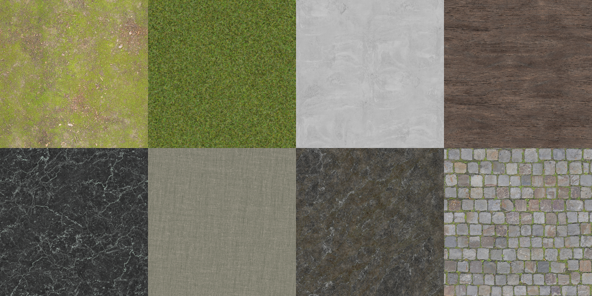
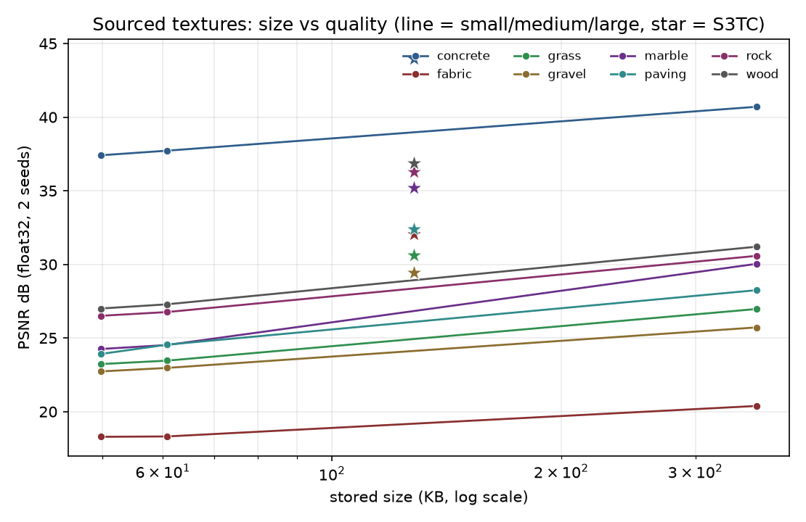

Neural Texture Compression
Max Lee - maxwelllP2. S3TC (DXT1) baseline
How the endpoints were chosen
For every 4×4 block:
PSNR and compression
| Texture | PSNR (dB) | Compressed | Original | Ratio (comp/orig) |
|---|---|---|---|---|
| gradient | 42.89 | 128 KB | 768 KB | 1/6 (0.167) |
| bricks | 41.39 | 128 KB | 768 KB | 1/6 (0.167) |
| clouds | 42.63 | 128 KB | 768 KB | 1/6 (0.167) |


Issues with S3TC
Isotropic colorings (i.e. large variances in the second and third PCA axes) cause problems for S3TC. The palette is four points on the line between two endpoints, so if the colors vary in two dimensions inside a block, the approximation is inaccurate. Additionally, due to the nature of S3TC, edges not aligned to the 4×4 grid are smeared or stepped, and every block gets the same 64 bits whether it needs them or not, leading to more inefficiencies. Also notable is that S3TC inaccuracies are made more visible by steps at every block boundary (very noticeable on the smooth gradient), making true perceived representation quality probably worse than the PSNR rating would suggest.


Why does green get an extra bit?
Green carries most of humans' perceived luminance (Rec. 709 weights ≈ 0.21 R, 0.72 G, 0.07 B), so a green error is ~3× as visible as in red and ~10× as visible as in blue. The extra level on green removes the most visible banding per bit. Evolutionarily, this is probably because sunlight is mostly green and because green wavelength is in between red and blue.
Why divide-by-levels quantization is a good approximation
q = round(c · levels), c_hat = q / levels returns an exact rational, while hardware
reconstructs a code by bit replication into 8 bits (≈ round(q·255/31)/255). Since 255/31
is not an integer the two can differ, but by under a 1/255 step, and both are monotonic with the same
half-step rounding error, so the difference is not significant.
P6. Results and comparison
Five seeds per configuration; S3TC is the fixed 6× point.
| Texture | Model | PSNR (dB) | Size | Compression (raw/comp) |
|---|---|---|---|---|
| gradient | small | 53.3 | 49.8 KB | 15.4× |
| gradient | medium | 58.0 | 60.8 KB | 12.6× |
| gradient | large | 58.0 | 361.3 KB | 2.1× |
| gradient | S3TC | 42.9 | 128.0 KB | 6.0× |
| bricks | small | 32.1 | 49.8 KB | 15.4× |
| bricks | medium | 36.4 | 60.8 KB | 12.6× |
| bricks | large | 41.7 | 361.3 KB | 2.1× |
| bricks | S3TC | 41.4 | 128.0 KB | 6.0× |
| clouds | small | 38.9 | 49.8 KB | 15.4× |
| clouds | medium | 40.9 | 60.8 KB | 12.6× |
| clouds | large | 49.0 | 361.3 KB | 2.1× |
| clouds | S3TC | 42.6 | 128.0 KB | 6.0× |


Best architecture per texture
- Gradient: medium (58.0 dB). It matches large at a sixth of the size; a smooth ramp does not need the large grid's extra capacity. All sizes beat S3TC by ~10 dB or more.
- Bricks: large (41.7 dB). The sharp edges need the finest level and more features; small collapses to 32.1 dB because one 64-level grid cannot hold mortar edges.
- Clouds: large (49.0 dB). Only large has coarse and fine levels plus enough features for the multi-scale detail; medium is 40.9 dB.
Did each texture's compression beat S3TC?
- Gradient: yes. All sizes beat S3TC, and small is both smaller (15.4× > 6×) and higher PSNR.
- Bricks and clouds: no clean win. Only large beats S3TC on PSNR, and it is larger (2.1× vs. 6×). Small and medium are smaller but lower PSNR. At a matched size S3TC is better here.
Reconstructions


P7. Quantization
Post-training, each stored array is quantized separately over its own range: round to the nearest of 256 levels,
store q, decode x_hat = lo + q · scale (one byte per value plus two float32 range
endpoints per array).
| Texture | Model | PSNR float | PSNR 8-bit |
|---|---|---|---|
| gradient | small | 53.3 | 52.4 |
| gradient | medium | 58.0 | 56.1 |
| gradient | large | 58.0 | 57.1 |
| bricks | small | 32.1 | 31.3 |
| bricks | medium | 36.4 | 35.4 |
| bricks | large | 41.7 | 41.5 |
| clouds | small | 38.9 | 38.4 |
| clouds | medium | 40.9 | 40.3 |
| clouds | large | 49.0 | 48.1 |
| Model | float32 | 8-bit grid | 8-bit grid + MLP |
|---|---|---|---|
| small | 49.8 KB (15.4×) | 25.8 KB (29.8×) | 12.5 KB (61.5×) |
| medium | 60.8 KB (12.6×) | 29.3 KB (26.2×) | 15.3 KB (50.3×) |
| large | 361.3 KB (2.1×) | 106.3 KB (7.2×) | 90.4 KB (8.5×) |
Quality lost: 0.01–0.65 dB when only the grid is quantized (large under 0.3 dB); up to 1.9 dB on the small model when the decoder is quantized too (about 0.9 dB on medium/large). The grid features span a narrow range, so a bucket is a tiny fraction of the value scale and the error is a small uniform rounding, so the quantization just turns into noise. The small model is affected most because its MLP is a large share of its size and has a wider weight range.
P8. Textures sourced online
I found eight CC0 color maps from ambientCG spanning frequency content. Relative to the given textures, they have less-varying colors and more high-frequency patterns. I used the mean absolute Laplacian of the grayscale texture as a detail metric (higher = more high-frequency energy).

| Texture | detail score | S3TC | small | medium | large |
|---|---|---|---|---|---|
| concrete | 0.036 | 44.0 | 37.4 | 37.7 | 40.7 |
| wood | 0.112 | 36.9 | 27.0 | 27.3 | 31.2 |
| rock | 0.113 | 36.3 | 26.5 | 26.8 | 30.6 |
| marble | 0.124 | 35.2 | 24.3 | 24.5 | 30.0 |
| paving | 0.139 | 32.4 | 23.9 | 24.5 | 28.2 |
| grass | 0.138 | 30.6 | 23.2 | 23.5 | 27.0 |
| gravel | 0.178 | 29.4 | 22.7 | 23.0 | 25.7 |
| fabric | 0.477 | 32.1 | 18.3 | 18.3 | 20.4 |

On every sourced texture, the baseline S3TC beats the neural representation, including the much larger large model.
- Fine repetitive weave (fabric, detail 0.477): The weave sits near the finest grid resolution, and rather than dropping it the model invents smooth large-scale blobs that are not in the texture: a bilinear grid is a low-pass filter, and content above its cutoff turns into spurious low-frequency structure.
- Sparse thin veins (marble, 0.124): Small and medium blur the veins into wavy bands; large gains +5.5 dB because the 128 level and four features can trace them, but it is still behind S3TC.
- Fine stochastic detail (gravel 0.178, grass 0.138, paving 0.139): On mid-detail textures, S3TC still wins by 3.6–4.2 dB; the grid smooths the fine structure.
- Directional and multi-scale (wood 0.112, rock 0.113): S3TC wins by 5.7 dB; large recovers much of the structure that small/medium lose.
- Smooth low-frequency (concrete, 0.036): This texture is the closest to the starter gradient, but it is still 3.3 dB behind S3TC; the reconstruction loses the fine aggregate speckle. The feature grid + MLP implementation's success over S3TC seems to be specific to textures far below the grid's bandwidth, not a general improvement.
Conclusions
- S3TC is a strong baseline: a fixed 6× at 41–44 dB PSNR, but its four-colors-per-block palette limits color range and leaves visible blocking on smooth gradients.
- The feature grid + MLP representation dominates when the content is smooth and low-frequency and the color range is wide: on the starter textures it beats S3TC, and after 8-bit quantization the large model beats it on all three at a smaller stored size (90.4 KB vs 128 KB).
- It loses on natural textures. Across all eight sourced textures S3TC wins, even against the much larger large model, and the gap grows with high-frequency detail (3.3 dB on concrete up to 11.7 dB on fabric). It behaves as a low-pass representation: detail it cannot carry becomes blur, and content near or above the grid cutoff can fold into spurious low-frequency structure.
- Quantization is cheap. Quantizing the grid costs under 0.65 dB and shrinks the representation 2–4×; the small model reaches 61.5× at 52.4 dB on the gradient.
- The two methods are complementary: the learned model is better for smooth, wide-color-range content, while S3TC is better for fine detail. Closing the high-frequency gap needs higher grid resolutions and more levels, more feature channels, and maybe positional or hash features to improve the learnability of fine detail.
- In the future, I would like to experiment with larger feature grids to learn higher-frequency details. I would also like to experiment with more aggressive quantization because I haven't hit an amount of quantization where the neural representation breaks down and the PSNR is barely affected at the current levels of quantization.
Appendix: seam-aware S3TC (beyond the required problems)
Side experiment: how much of S3TC's blocking is recoverable by changing only the endpoint choice at the same 8 bytes/block? The seam metric compares, for every adjacent texel pair straddling a block boundary, the mean absolute difference between the reconstruction's color step and the original's, so a perfect reconstruction scores 0 and only added discontinuities count. Baseline seam: gradient 0.00225, clouds 0.00690, bricks 0.00059. About half the gradient seam is RGB565 rounding alone (float endpoints drop it to 0.00119).
I tested with a few different methods of optimizing the baseline endpoint selections by creating different loss functions that took into account a block's neighbors and running gradient descent-like optimization on them.
- Block error diffusion feeds each block's edge error into its right/below neighbors before fitting them. Mild: gradient seam −8%, clouds −4%; needs a light touch (alpha 0.1).
- Boundary-weighted refit pulls edge texels toward
neighbor_decoded + original_step. Best seam on the gradient (−13%), roughly neutral PSNR. - Seam-energy ICM lets each block search candidate endpoints (its own, PCA, the baseline fit, and blends toward neighbors) against a local error plus a seam penalty. Best overall: gradient +1.34 dB and −9% seam, clouds +0.16 dB and −14% seam.
All keep the fixed 6×, and none remove the roughly half of the seam that is RGB565 rounding. Bricks is unchanged by all three (its blocks are flat, so there is no added step to fix), a useful sanity check.